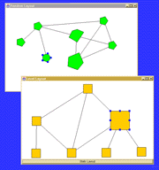
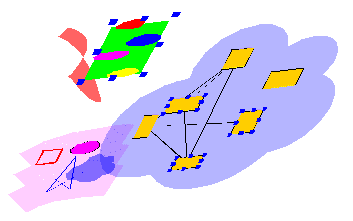
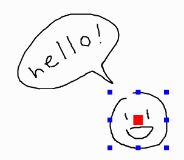
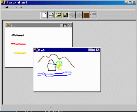
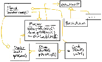
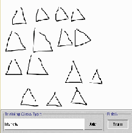

|

The diva.graph demo
The graph demo demonstrates basic graph editing and layout functionality, illustrates the key points of the graph
architecture. A graph is constructed programmatically, and can then be edited interactively by the user. There
are two views of the graph: one which has an automatic layout algorithm applied each time a new node is added,
and one which uses a random or user-driven layout.
The interaction and display in the graph editor, although currently fairly simple, uses the features of the Diva
canvas to good effect. The use of two views of the graph highlights the Swing-style model-view-controller architecture
of the graph package.
More information

The diva.canvas demo
The canvas demo illustrates the main architectural features of the canvas. The window contains a single instance
of JCanvas, containing an instance of GraphicsPane. The six sliders control the scale, rotation, translation, and
shear of the top-level pane.
The pane contains a number of figures that can be selected and manipulated. Note the use of translucent fills and
arbitrary clip-regions supported by Java2D. The Diva canvas is a relatively light-weight layer over Java2D, so
any rendering that can be done in Java2D can also be done in canvas figures.
Two of the figures recursively contain panes -- one is another GraphicsPane, and the other is a graph editor. The
graph editor can be manipulated in the same manner is described for the graph demo above. We plan to use this hierarchical
structuring facility to explore display and navigation through complex information spaces.
Note: The demo is currently very sluggish due to problems in Java2D's hit-testing code. A bug report has
been filed, and this problem will hopefully be fixed in the next maintenance release. Also note that this problem
is most noticeable with examples that use GeneralPath; please see the canvas tutorials for some examples that do
not have this problem.
More information

The diva.sketch demo
The sketch demo demonstrates a sketch-based editor that is built using the diva.sketch package. This is a simple
editor that allows free-hand drawing. The editing window contains an instance of JSketch which by default sets
up all the necessary classes to handle sketch input. JSketch uses Diva canvas package that implements scaling and
dragging of figures.
More information

The diva.whiteboard demo
The whiteboard demo is a digital whiteboard which supports multiple documents and pages, saving and loading sketches,
changing pen colors and widths, and other basic whiteboard capabilities. In addition, it supports basic editing
commands such as selection and deletion using pen gestures.
More information

The diva.whiteboard.uml demo
The UML editor is a digital whiteboard application with an embedded sketch interpreter that understands a subset
of the notations of UML class diagrams. It provides basic electronic whiteboard features, gesture command editing,
and recognition of classes and relations in UML static structure diagrams.
More information

The diva.sketch.trainer application
Sketch trainer is a program that allows users to create customized gestures for their application. Users enter
about 15-20 samples for each type of gesture (e.g. square, triangle, circle, etc.) and can save the training samples
to a file. The user can also load in a previously created training file and modify its contents graphically.
After the samples are created, the user can test the recognition by pressing on the Train button. This
will launch a sketching window in which gestures are recognized if they are similar to the training data. If a
gesture is recognized, its type will be shown next to its figure.
More information
|